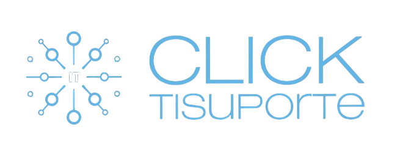

Suporte técnico
Ajuda rápida para computadores, sistemas e usuários.

Entre em contatoSUPORTE DE TI PARA EMPRESAS
Soluções práticas em tecnologia, suporte técnico e infraestrutura para sua empresa trabalhar com mais segurança e tranquilidade.
Falar pelo WhatsApp> sistemas online
> dados protegidos
> equipe conectada_
COMO PODEMOS AJUDAR
Conheça as soluções que ajudam sua empresa a trabalhar com mais segurança, organização e tranquilidade.
Ajuda rápida para computadores, sistemas e usuários.
Conexão estável e segura para a sua empresa.
Acompanhamento preventivo para identificar problemas antes que eles afetem o seu trabalho.
Proteção para os dados que mantêm seu negócio em movimento.
Ajuda com e-mails, ferramentas de colaboração e organização da equipe.
Manutenção e suporte para os equipamentos do seu dia a dia.
Suporte para ambientes Windows e Linux, com foco em estabilidade.
Atendimento ágil para resolver questões sem esperar uma visita técnica.
Sites profissionais para pequenas empresas, com integração ao WhatsApp, domínio e hospedagem. Manutenção contínua com atualizações, backup e suporte.
Solicitar orçamento01 / 09 serviços
ATENDIMENTO DESCOMPLICADO
Um processo simples para sua empresa receber o suporte que precisa.
Conte o que sua empresa precisa pelo WhatsApp.
Avaliamos o cenário e indicamos a melhor solução.
Executamos o suporte e ajudamos a prevenir novos problemas.
QUEM SOMOS
A Click TI Suporte é uma empresa focada em tornar a tecnologia uma aliada do seu negócio. Oferecemos atendimento claro, soluções práticas e suporte para que sua equipe possa trabalhar sem parar.
Cuidamos dos computadores, redes, dados e da infraestrutura de TI da sua empresa com atenção, responsabilidade e foco na prevenção de problemas.
POR QUE A CLICK TI